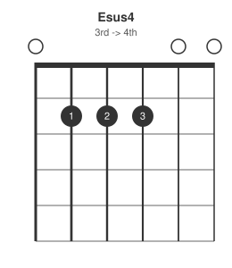
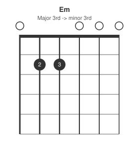
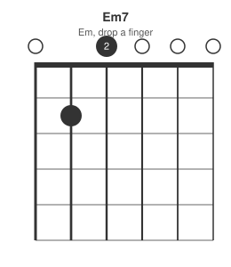
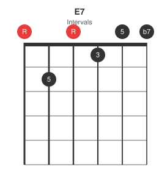
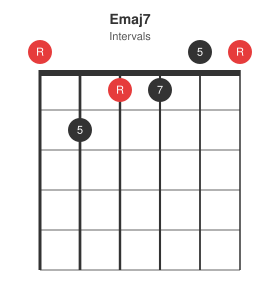
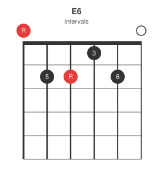
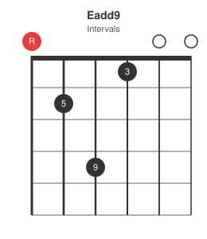

E major is the full six-string open shape, and the same shape barred at any fret becomes the movable "E-shape" chord used throughout the I-IV-V fretboard map. This post closes the open-chord series started with A and D.
Base shape: E major

Suspended: sus4

An open Esus2 isn't practical in standard tuning without muting or a stretch that defeats the point of an "open" chord, so it's skipped here -- sus4 is the one that stays in the family of easy one-finger moves.
Minor and minor seventh


Em7 is the simplest full chord shape on the guitar -- one finger, four open strings.
Dominant seventh and major seventh


E7 is the shape used as the I chord in a blues in E (see the 12-bar blues post).
Sixth and add9


Summary table
| Chord | Frets (low to high) | Change from E major |
|---|---|---|
| E | 022100 | base shape |
| Esus4 | 022200 | 3rd -> 4th |
| Em | 022000 | major 3rd -> minor 3rd |
| Em7 | 020000 | Em, drop a finger |
| E7 | 020100 | add b7 |
| Emaj7 | 021100 | add maj7 |
| E6 | 022120 | add 6th |
| Eadd9 | 024100 | add 9th |
From open shape to movable barre
Barre the entire E major shape at any fret and the root moves with it while every relationship above stays intact -- an F major barre at fret 1 is the same shape as the open E, just shifted. This is the shape behind the "E-shape root on the 6th string" reference in the I-IV-V fretboard map: learn the open-chord variations here, and the same finger patterns are available anywhere on the neck once barred.